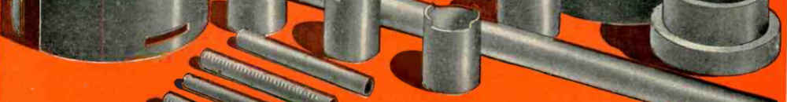

Tunnel vision is a big problem in the design process. It takes the form of overly optimizing one particular parameter of a system, which takes the whole into a local optimum, takes a long time, and inhibits the completion of a project—sometimes forever.
The way out is to recognize it happening and consciously accept imperfection as a Good Thing, for the best is the enemy of the good. This can mean accepting resource underutilization, visual imbalance, or even performance tradeoffs.
Nature is robust, omnipresent, and not at all perfect. Imitate nature.